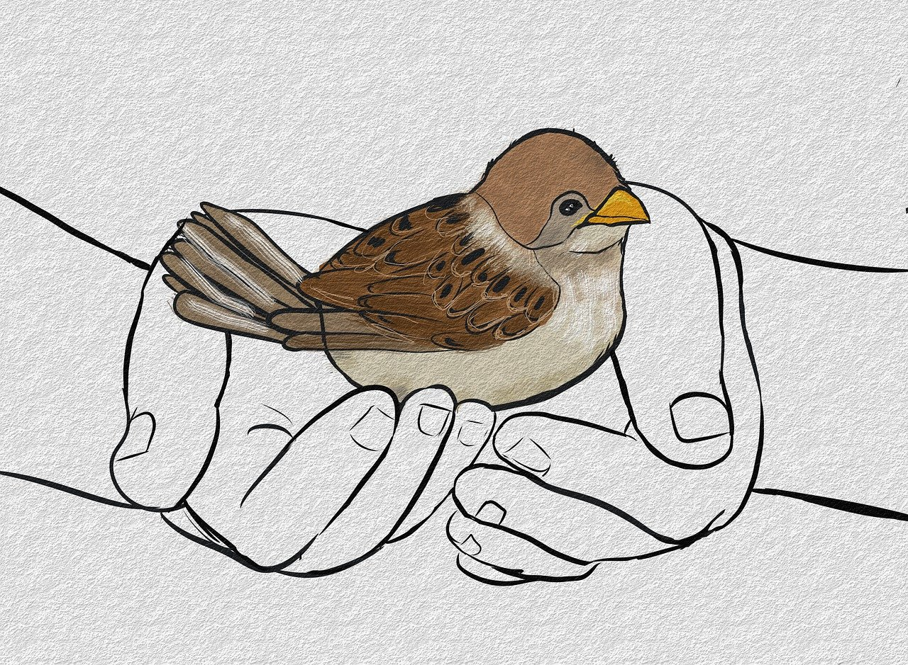
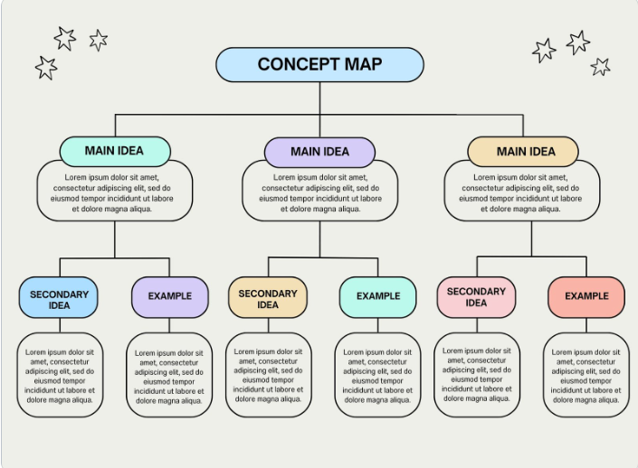
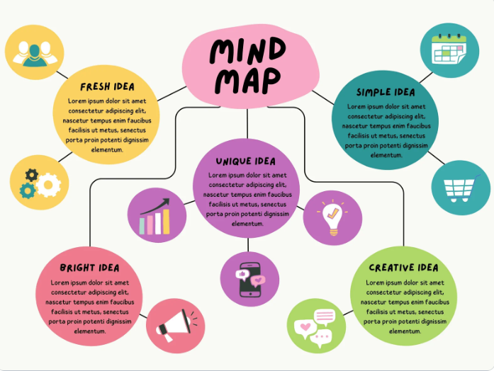
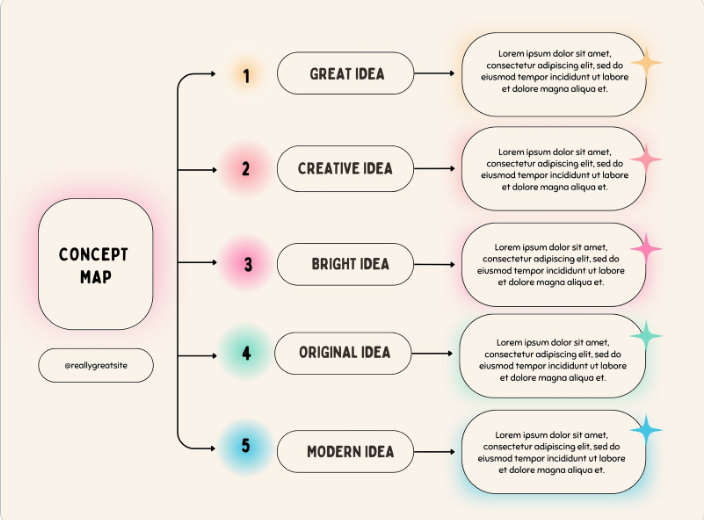
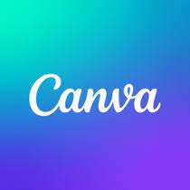
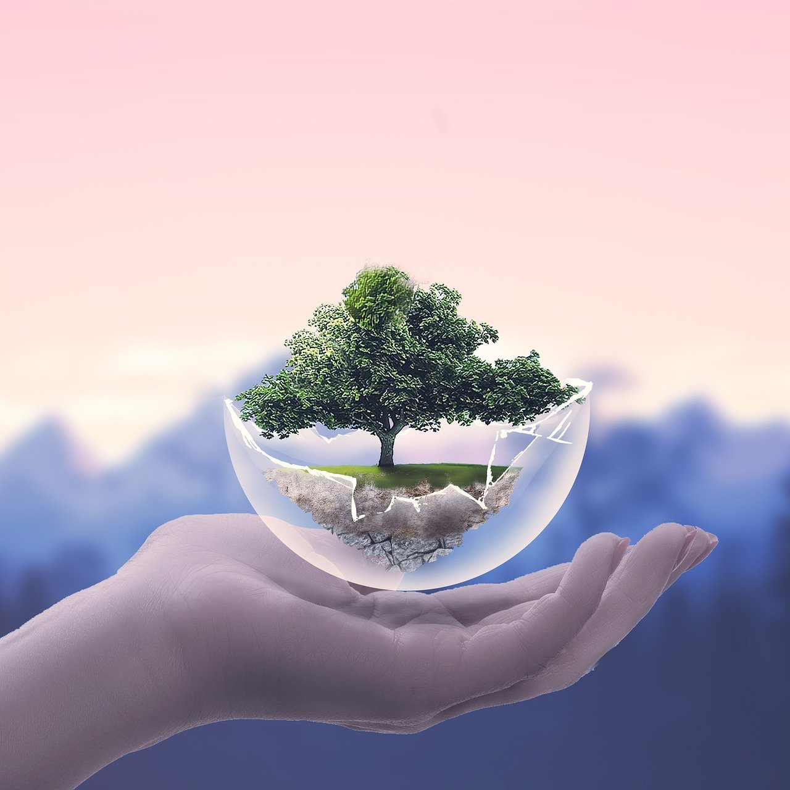

RESUMIENDO...

Durante esta situación de aprendizaje, entre otros muchos aspectos, hemos aprendido sobre la fauna y la flora autóctona del Parque Natural de Doñana. Sabemos que existen seres vivos que se encuentran en peligro de extinción debido fundamentalmente a los cambios en su ecosistema natural en el que la acción humana ha tenido mucho que ver con su deterioro. Creemos que después de la toma de conciencia que has experimentado en esta SDA, vas a estar más en contacto con el entorno en el que vives y con la madre tierra. Te pedimos que no olvides nunca lo que has aprendido y que lo pongas en práctica en la medida de lo posible. Si cada uno y cada una de nosotros ponemos nuestro granito de arena podemos hacer de este mundo un lugar mejor y de Doñana un entorno más verde, más recuperado y más amable para las especies que lo habitan.
ESQUEMATIZANDO



Plantillas extraídas de la aplicación Canvas.
Ya estamos a punto de finalizar. Te pedimos que elabores un pequeño resumen, mapa conceptual o esquema en el que recojas las ideas más importantes de esta SDA.
Puedes elaborarlo individualmente, con un compañero o compañera o con tu grupo cooperativo. Puedes hacerlo en papel o ayudándote de Canvas.
¡Ánimo!
TAREA FINAL

Querido alumnado:
Ya estamos llegando al final de nuestro trabajo sobre el entorno Doñana por eso vamos a pedirte un último esfuerzo...¿estás preparado/a?
¡Empezamos!
Producto Final: Campaña de Concienciación "Especies de Doñana: Tesoros que Proteger"
El producto final de la situación de aprendizaje "Salvar Doñana" es un trabajo digital colaborativo elaborado en la plataforma Canva, en el que tendréis que diseñar una campaña de concienciación (esta vez en formato digital y mucho más completa) titulada "Especies de Doñana: Tesoros que Proteger". Este recurso estará orientado a sensibilizar a vuestras familias y al resto de la comunidad educativa sobre la importancia de conservar las especies autóctonas de este parque natural y su entorno y de contribuir a su conservación con acciones que favorezcan el cuidado medioambiental.
Algunos aspectos a tener en cuenta:
- Todos y todas debéis tener acceso desde vuestro perfil al trabajo que se está realizando en grupo en Canva...no me vale que se haga desde un solo perfil. Una vez seleccionada la plantilla, debéis incluirme a mí también porque así os puedo ir haciendo aportaciones mientras trabajáis.
- Si seleccionáis un modelo de plantilla en Canvas, aseguraos de que dicho modelo está indicado para leer la información en el móvil.
- Podéis añadir fotos y texto pero recordad que el texto tiene que ser corto, claro y directo. Podéis añadir tantas páginas como queráis no superando un máximo de ocho.
Muchas gracias por vuestro trabajo. Entre todos y todas podemos hacer de este mundo un lugar mejor y de nuestro entorno Doñana un lugar más verde, sano y amable para los seres vivos que lo habitan.
